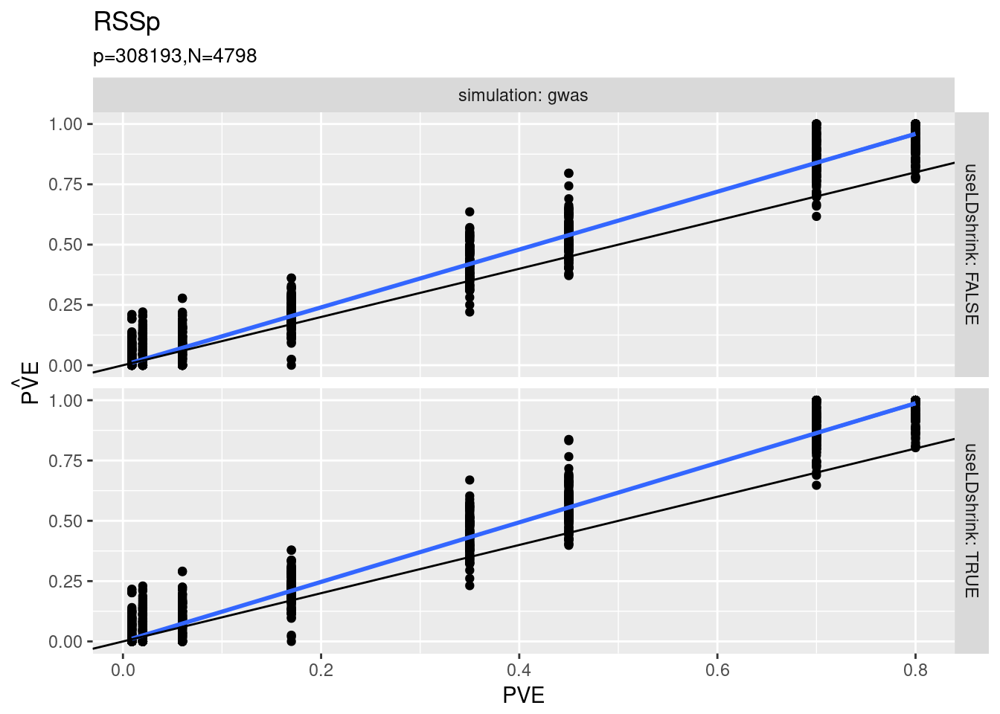
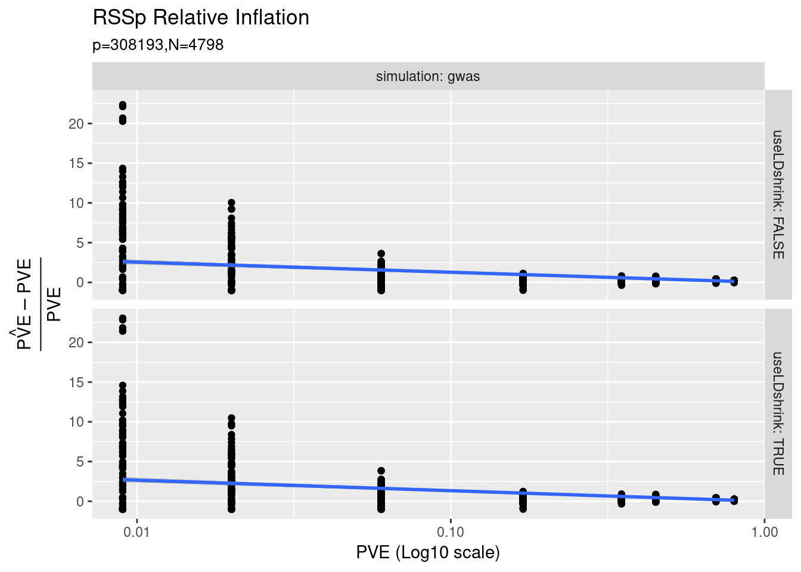
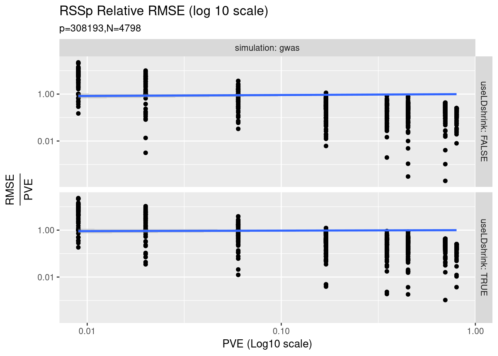
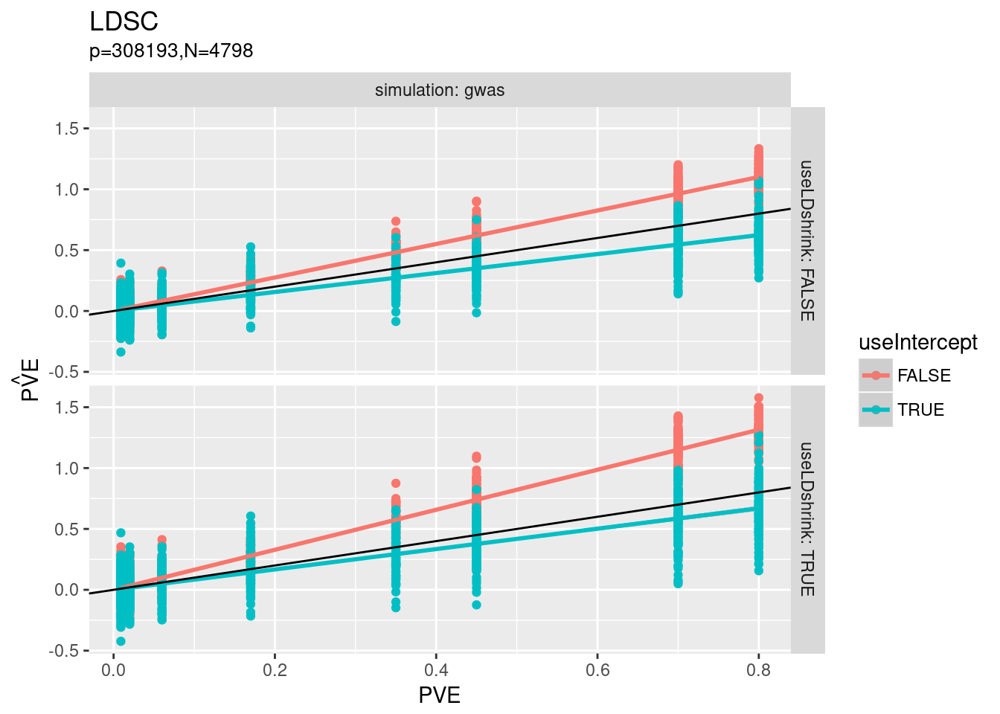
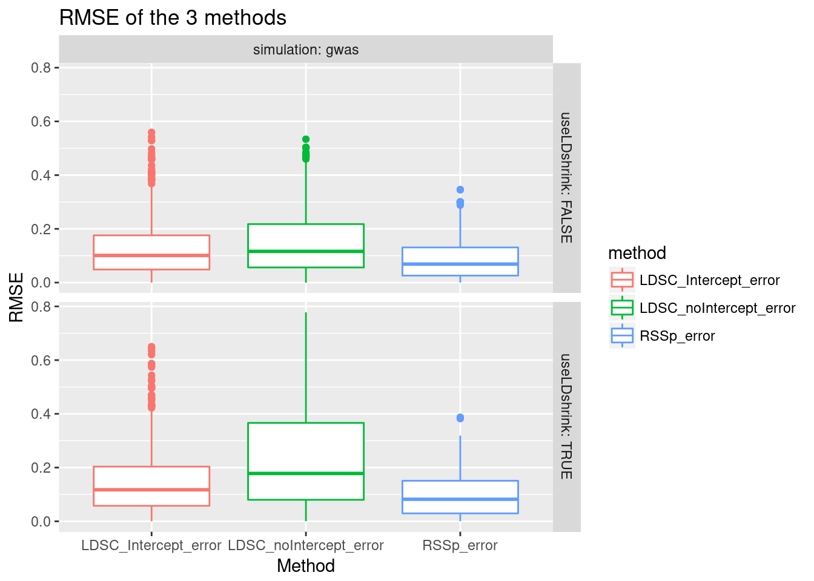
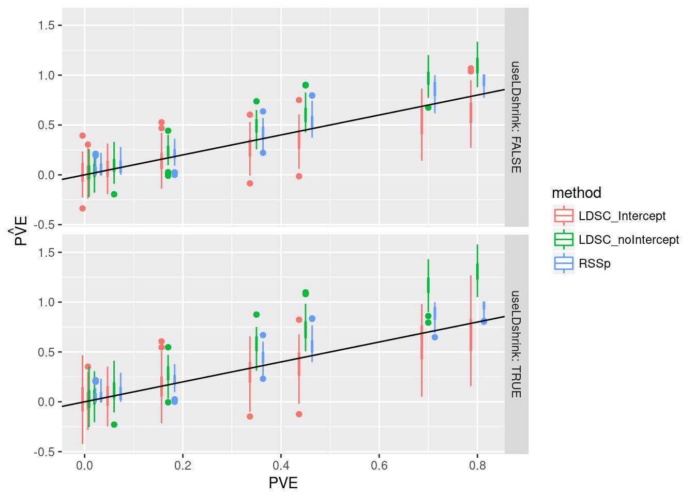

New Whole-Genome Simulations
Nicholas Knoblauch
2018-04-12
Last updated: 2018-04-25
workflowr checks: (Click a bullet for more information)-
✔ R Markdown file: up-to-date
Great! Since the R Markdown file has been committed to the Git repository, you know the exact version of the code that produced these results.
-
✔ Environment: empty
Great job! The global environment was empty. Objects defined in the global environment can affect the analysis in your R Markdown file in unknown ways. For reproduciblity it’s best to always run the code in an empty environment.
-
✔ Seed:
set.seed(12345)The command
set.seed(12345)was run prior to running the code in the R Markdown file. Setting a seed ensures that any results that rely on randomness, e.g. subsampling or permutations, are reproducible. -
✔ Session information: recorded
Great job! Recording the operating system, R version, and package versions is critical for reproducibility.
-
Great! You are using Git for version control. Tracking code development and connecting the code version to the results is critical for reproducibility. The version displayed above was the version of the Git repository at the time these results were generated.✔ Repository version: a4d7a00
Note that you need to be careful to ensure that all relevant files for the analysis have been committed to Git prior to generating the results (you can usewflow_publishorwflow_git_commit). workflowr only checks the R Markdown file, but you know if there are other scripts or data files that it depends on. Below is the status of the Git repository when the results were generated:
Note that any generated files, e.g. HTML, png, CSS, etc., are not included in this status report because it is ok for generated content to have uncommitted changes.Ignored files: Ignored: .RData Ignored: .Rhistory Ignored: .Rproj.user/ Ignored: .httr-oauth Ignored: analysis/PolygenicEstimation_cache/ Ignored: code/scripts/.RData Ignored: code/scripts/.Rhistory Ignored: code/snakemake_files/.RData Ignored: code/snakemake_files/parameter_generation/ Ignored: code/snakemake_files/subset_data_pipeline/.RData Ignored: data/rep_polygenic/ Untracked files: Untracked: _workflowr.yml Untracked: analysis/#RSSp_WTCC_noConfounding.Rmd# Untracked: analysis/GRM_estimation.Rmd Untracked: analysis/GenomeWideSimulation.Rmd Untracked: analysis/Heritability.Rmd Untracked: analysis/LDshrink_effect.Rmd Untracked: analysis/MeetingSummary1.Rmd Untracked: analysis/RSSR_PolygenicData.Rmd Untracked: analysis/RSSp.stan Untracked: analysis/RSSp2.stan Untracked: analysis/RSSp_LDshrink.Rmd Untracked: analysis/RSSp_Large_WTCC_noConfounding.Rmd Untracked: analysis/RSSp_Largest_Simulation.Rmd Untracked: analysis/RSSp_WTCC_noConfounding.Rmd Untracked: analysis/RSSp_ldsc_highPVE_chr1.Rmd Untracked: analysis/RSSp_ldsc_highPVE_hr.Rmd Untracked: analysis/RSSp_ldsc_noConfounding.Rmd Untracked: analysis/Running_ldetect.Rmd Untracked: analysis/Summary.Rmd Untracked: analysis/Summary.org Untracked: analysis/Vanilla_LDSC.Rmd Untracked: analysis/chr_16.Rmd Untracked: analysis/derby.log Untracked: analysis/fquh_mod.RDS Untracked: analysis/ltximg/ Untracked: analysis/nquh_mod.RDS Untracked: analysis/quh_mod.RDS Untracked: analysis/scz_data.org Untracked: analysis/shrinkage_effect.Rmd Untracked: code/.ipynb_checkpoints/ Untracked: code/Untitled.ipynb Untracked: code/Untitled1.ipynb Untracked: code/scripts/.snakemake.5new9sfu.evd_1kg_h5.R Untracked: code/scripts/.snakemake.bl4l60_j.evd_1kg_h5.R Untracked: code/scripts/.snakemake.gndk0qyr.evd_1kg_h5.R Untracked: code/scripts/.snakemake.io0ogr01.evd_1kg_h5.R Untracked: code/scripts/.snakemake.q3jzmw1j.gen_ty_block_RSSp.R Untracked: code/scripts/.snakemake.tfa8jqyw.evd_1kg_h5.R Untracked: code/scripts/.snakemake.u82nlrp8.ldsc_rssp.Rmd Untracked: code/scripts/.snakemake.yjc804n1.evd_1kg_h5.R Untracked: code/scripts/RSSp_ldsc_results.Rmd Untracked: code/scripts/allel2haplo_h5.R~ Untracked: code/scripts/break_df.R~ Untracked: code/scripts/gen_sample_df.R Untracked: code/scripts/gen_sample_df.R~ Untracked: code/scripts/gen_sample_df_n.R Untracked: code/scripts/gen_sample_df_n.R~ Untracked: code/scripts/gen_uh_chunk_direct.R Untracked: code/scripts/impute2h5.R~ Untracked: code/scripts/ldsc_rssp.Rmd Untracked: code/scripts/ldshrink_cv.R Untracked: code/scripts/ldshrink_cv.R~ Untracked: code/scripts/ldshrink_optim.R Untracked: code/scripts/sim_geno_evd.R Untracked: code/scripts/sim_geno_evd.R~ Untracked: code/scripts/split_plink.pl Untracked: code/scripts/subset_snp_chr.R~ Untracked: code/scripts/vcf-liftover.sh Untracked: code/scripts/vcf2allel.py Untracked: code/scripts/vcf2allel.py~ Untracked: code/snakemake_files/#manip_snakefile# Untracked: code/snakemake_files/.#manip_snakefile Untracked: code/snakemake_files/.snakemake/ Untracked: code/snakemake_files/crossover_snakefile Untracked: code/snakemake_files/impute_snakefile Untracked: code/snakemake_files/kg_snakefile~ Untracked: code/snakemake_files/ldsc/ Untracked: code/snakemake_files/manip_snakefile Untracked: code/snakemake_files/rssp_ldsc_report/ Untracked: code/snakemake_files/temp_map_19.RDS Untracked: code/snakemake_files/temp_target_19.RDS Untracked: code/workflow_params.json~ Untracked: data/NCBI34_to_GRCh38.chain.gz Untracked: data/Snakemake_inputs/ Untracked: data/hg16ToHg19.over.chain.gz Untracked: data/hg18ToHg19.over.chain.gz Untracked: docs/#RSSp_WTCC_noConfounding.Rmd# Untracked: docs/RSSp.stan Untracked: docs/RSSp2.stan Untracked: docs/Summary.org Untracked: docs/derby.log Untracked: docs/figure/LDshrink_effect.Rmd/ Untracked: docs/figure/RSSp_Large_WTCC_noConfounding.Rmd/ Untracked: docs/figure/RSSp_WTCC_noConfounding.Rmd/ Untracked: docs/figure/RSSp_ldsc_highPVE_chr1.Rmd/ Untracked: docs/figure/RSSp_ldsc_highPVE_hr.Rmd/ Untracked: docs/fquh_mod.RDS Untracked: docs/log4j.spark.log Untracked: docs/ltximg/ Untracked: docs/nquh_mod.RDS Untracked: docs/quh_mod.RDS Untracked: docs/scz_data.org Untracked: output/RSSp_snakemake/ Unstaged changes: Modified: analysis/IndependenceCheck.Rmd Modified: analysis/Meeting_Notes.Rmd Modified: analysis/PolygenicEstimation.Rmd Modified: analysis/RSSP_standard_error.Rmd Modified: analysis/RSSp_Chunksize_Investigation.Rmd Modified: analysis/RSSp_Large_Simulation.Rmd Modified: analysis/RSSp_Posterior.Rmd Modified: analysis/RSSp_Prediction.Rmd Modified: analysis/RSSp_ldsc.Rmd Modified: analysis/RSSp_ldsc_gwas_direct_noConfounding.Rmd Modified: analysis/RSSp_ldsc_highPVE.Rmd Modified: analysis/SimulationPipeline.Rmd Modified: analysis/_site.yml Modified: analysis/about.Rmd Modified: analysis/chr_2.Rmd Deleted: analysis/chunks.R Modified: analysis/index.Rmd Modified: analysis/license.Rmd Modified: analysis/simulatingGWAS.Rmd Modified: analysis/simulation.Rmd Modified: code/TF_LDshrink.ipynb Modified: code/scripts/RSSp_est.R Modified: code/scripts/break_df.R Modified: code/scripts/evd_1kg_h5.R Modified: code/scripts/gds2h5.R Modified: code/scripts/gen_quh_chunk_direct.R Modified: code/scripts/gen_quh_chunk_h5.R Modified: code/scripts/gen_ty_block_RSSp.R Modified: code/scripts/h52tplink.R Modified: code/scripts/ldsc_trait_chunk.R Modified: code/scripts/map2RDS.R Modified: code/scripts/map_uh_LDchunk_RSSp_h5.R Modified: code/scripts/parse_ldsc.R Modified: code/scripts/prep_ldsc_uh.R Modified: code/scripts/subset_snp_chr.R Modified: code/snakemake_files/Snakefile Modified: code/snakemake_files/combined_snakefile Modified: code/snakemake_files/direct_snakefile Modified: code/snakemake_files/kg_snakefile Modified: code/snakemake_files/ldsc_snakefile Modified: code/snakemake_files/param_snakefile Modified: code/snakemake_files/rssp_snakefile Modified: code/snakemake_files/wtcc_snakefile Modified: code/workflow_params.json Modified: code/workflow_params_rcc.json Modified: code/workflow_params_xps.json
Expand here to see past versions:
Since Last Time
Bug Fixes
It looks like there was a bug in the code performing the \(Q^T\hat{u}\) step. This is part of why both ldsc and the direct simulations performed so well.
MHC
It also came to my attention (thanks to Xiang), that the MHC locus was included in the simulations. SNPs in that region are now removed before simulation begins.
New data
To make sure the whole pipeline is working consistently, I’ve added incorporated the GENRED2 genotype data (342,252 SNPs, 2226 individuals) to the repetoire of simulations. The GENRED2 data represents a superset of the SNP data used in the DGN eQTL study.
New simulation scenarios
I’ve made some changes to the simulations and estimation procedures for LD score regression. I now run LD score regression with an intercept fixed at 1 (useIntercept=FALSE), as well an intercept that is allowed to vary (useIntercept=TRUE). I also now have a “direct” simulation that is run through LD score regression. After simulating \(\hat{v}_i \sim N(0,\sigma_u^2 \lambda_i^2+\lambda_i)\), I multiply by \(Q\) to obtain \(Q\hat{v}=QQ^{T}\hat{u}=\hat{u}\), which I can then input to LD score regression as usual.
RSSp results
RSSp still shows moderate inflation, but it’s not nearly as bad as it was with the bug.

Expand here to see past versions of unnamed-chunk-3-1.png:
| Version | Author | Date |
|---|---|---|
| d859232 | CreRecombinase | 2018-04-25 |
If we plot \(\frac{\hat{\text{PVE}}-\text{PVE}}{\text{PVE}}\) as a function of \(\text{PVE}\), which can be thought of as “relative inflation”, we see that the effect is much worse at low PVE, and that it actually trends down as true PVE increases. To better visualize this, I’ve changed the X axis to a log10 scale. 
Expand here to see past versions of unnamed-chunk-4-1.png:
| Version | Author | Date |
|---|---|---|
| d859232 | CreRecombinase | 2018-04-25 |
To finish out the summary of the new RSSp results, below is a plot of relative RMSE, It doesn’t look tlike there is a ma 
Expand here to see past versions of unnamed-chunk-5-1.png:
| Version | Author | Date |
|---|---|---|
| d859232 | CreRecombinase | 2018-04-25 |
LDSC results
As mentioned above, LD score regression was run with a fixed intercept and with an estimated intercept. Results for both are shown here. Interestingly, LD score regression has a very hard time with the direct simulations when the intercept is allowed to vary

Expand here to see past versions of unnamed-chunk-7-1.png:
| Version | Author | Date |
|---|---|---|
| d859232 | CreRecombinase | 2018-04-25 |
RSSp vs LDSC
Overall it looks like RSSp does at least as well, and in some cases better than LD score regression (both with and without and intercept). Next steps are to try out of sample LD.
Joining, by = c("fgeneid", "tpve", "simulation", "useLDshrink")
Joining, by = c("fgeneid", "tpve", "simulation", "useLDshrink")
Expand here to see past versions of unnamed-chunk-8-1.png:
| Version | Author | Date |
|---|---|---|
| d859232 | CreRecombinase | 2018-04-25 |

Expand here to see past versions of unnamed-chunk-9-1.png:
| Version | Author | Date |
|---|---|---|
| d859232 | CreRecombinase | 2018-04-25 |

Expand here to see past versions of unnamed-chunk-10-1.png:
| Version | Author | Date |
|---|---|---|
| d859232 | CreRecombinase | 2018-04-25 |
Session information
sessionInfo()R version 3.5.0 (2018-04-23)
Platform: x86_64-pc-linux-gnu (64-bit)
Running under: Manjaro Linux
Matrix products: default
BLAS/LAPACK: /opt/intel/compilers_and_libraries_2018.1.163/linux/mkl/lib/intel64_lin/libmkl_gf_lp64.so
locale:
[1] LC_CTYPE=en_US.UTF-8 LC_NUMERIC=C
[3] LC_TIME=en_US.UTF-8 LC_COLLATE=en_US.UTF-8
[5] LC_MONETARY=en_US.UTF-8 LC_MESSAGES=en_US.UTF-8
[7] LC_PAPER=en_US.UTF-8 LC_NAME=C
[9] LC_ADDRESS=C LC_TELEPHONE=C
[11] LC_MEASUREMENT=en_US.UTF-8 LC_IDENTIFICATION=C
attached base packages:
[1] stats graphics grDevices utils datasets methods base
other attached packages:
[1] bindrcpp_0.2.2 forcats_0.3.0 stringr_1.3.0 dplyr_0.7.4
[5] purrr_0.2.4 readr_1.1.1 tidyr_0.8.0 tibble_1.4.2
[9] ggplot2_2.2.1 tidyverse_1.2.1 EigenH5_1.1
loaded via a namespace (and not attached):
[1] RcppEigen_0.3.3.4.0 tidyselect_0.2.4 reshape2_1.4.3
[4] haven_1.1.1 lattice_0.20-35 colorspace_1.3-2
[7] htmltools_0.3.6 yaml_2.1.18 rlang_0.2.0
[10] R.oo_1.22.0 pillar_1.2.1 foreign_0.8-70
[13] glue_1.2.0 R.utils_2.6.0 readxl_1.1.0
[16] modelr_0.1.1 bindr_0.1.1 plyr_1.8.4
[19] cellranger_1.1.0 munsell_0.4.3 gtable_0.2.0
[22] workflowr_1.0.1 rvest_0.3.2 R.methodsS3_1.7.1
[25] libblosc_1.12.1 psych_1.8.3.3 evaluate_0.10.1
[28] labeling_0.3 knitr_1.20 parallel_3.5.0
[31] broom_0.4.4 Rcpp_0.12.16 backports_1.1.2
[34] scales_0.5.0 jsonlite_1.5 mnormt_1.5-5
[37] hms_0.4.2 digest_0.6.15 stringi_1.1.7
[40] grid_3.5.0 rprojroot_1.3-2 cli_1.0.0
[43] tools_3.5.0 magrittr_1.5 lazyeval_0.2.1
[46] crayon_1.3.4 whisker_0.3-2 pkgconfig_2.0.1
[49] Matrix_1.2-14 xml2_1.2.0 lubridate_1.7.4
[52] rstudioapi_0.7 assertthat_0.2.0 rmarkdown_1.9
[55] httr_1.3.1 R6_2.2.2 nlme_3.1-137
[58] git2r_0.21.0 compiler_3.5.0
This reproducible R Markdown analysis was created with workflowr 1.0.1